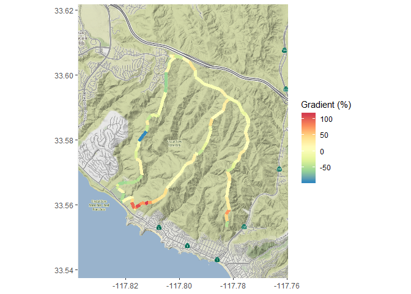

Marcus W. Beck, mbafs2012@gmail.com, Pedro Villarroel, pedrodvf@gmail.com, Daniel Padfield, dp323@exeter.ac.uk, Lorenzo Gaborini, lorenzo.gaborini@unil.ch, Niklas von Maltzahn, niklasvm@gmail.com

Overview and installation
This is the development repository for rStrava, an R package to access data from the Strava API. The package can be installed and loaded as follows:
install.packages('devtools') devtools::install_github('fawda123/rStrava')
Issues and suggestions
Please report any issues and suggestions on the issues link for the repository.
Package overview
The functions are in two categories depending on mode of use. The first category of functions scrape data from the public Strava website and the second category uses the API functions or relies on data from the API functions. The second category requires an authentication token. The help files for each category can be viewed using help.search:
help.search('notoken', package = 'rStrava') help.search('token', package = 'rStrava')
Scraping functions (no token)
An example using the scraping functions is below. Some users may have privacy settings that block public access to account data.
# get athlete data athl_fun(2837007, trace = FALSE)
## $`2837007`
## $`2837007`$name
## [1] "Marcus Beck"
##
## $`2837007`$location
## [1] "Irvine, California"
##
## $`2837007`$units
## [1] "mi" "ft"
##
## $`2837007`$monthly
## month miles hours elev_gain
## 1 2019-07-01 273.54686 20 893
## 2 2019-08-01 342.39727 25 1126
## 3 2019-09-01 284.57744 20 1041
## 4 2019-10-01 48.97586 7 773
## 5 2019-11-01 165.17040 14 545
## 6 2019-12-01 124.46997 11 553
## 7 2020-01-01 18.50008 1 52
##
## $`2837007`$recent
## id name type startDateLocal distance elevation movingTime
## 1 2998245402 Morning Ride ride 2020-01-09 3.6 15 15:00
## 2 2997205625 Afternoon Ride ride 2020-01-09 3.8 62 16:35
## 3 2995517807 Morning Ride ride 2020-01-08 3.6 15 15:35
##
## $`2837007`$achievements
## description timeago
## 1 PR on Snell Bridge up 2019-12-15 18:04:34
## 2 2nd fastest time on 21-9st Sprint 2020-01-08 11:47:05
## 3 3rd fastest time on 9-21st Sprint 2020-01-09 22:42:26API functions (token)
Setup
These functions require a Strava account and a personal API, both of which can be obtained on the Strava website. The user account can be created by following instructions on the Strava homepage. After the account is created, a personal API can be created under API tab of profile settings. The user must have an application name (chosen by the user), client id (different from the athlete id), and an application secret to create the authentication token. Additional information about the personal API can be found here. Every API retrieval function in the rStrava package requires an authentication token (called stoken in the help documents). The following is a suggested workflow for using the API functions with rStrava.
First, create the authentication token using your personal information from your API. Replace the app_name, app_client_id, and app_secret objects with the relevant info from your account.
app_name <- 'myappname' # chosen by user app_client_id <- 'myid' # an integer, assigned by Strava app_secret <- 'xxxxxxxx' # an alphanumeric secret, assigned by Strava # create the authentication token stoken <- httr::config(token = strava_oauth(app_name, app_client_id, app_secret, app_scope="activity:read_all"))
Setting cache = TRUE for strava_oauth will create an authentication file in the working directory. This can be used in later sessions as follows:
Finally, the get_heat_map and get_elev_prof functions require a key from the Google API. Follow the instructions here. The key can be added to the R environment file for later use:
# save the key, do only once cat("google_key=XXXXXXXXXXXXXXXXXXXXXXXXXXXXXXXXXXXXXX\n", file=file.path(normalizePath("~/"), ".Renviron"), append=TRUE) # retrieve the key, restart R if not found mykey <- Sys.getenv("google_key")
The get_heat_map function uses ggmap to create base maps. A Google API key is needed to use the function. This key must be registered externally with the ggmap package using register_google() before executing get_heat_map.
library(ggmap) register_google(mykey)
Using the functions
The API retrieval functions are used with the token.
myinfo <- get_athlete(stoken, id = '2837007')
head(myinfo)
## $id
## [1] 2837007
##
## $username
## [1] "beck_marcus"
##
## $resource_state
## [1] 2
##
## $firstname
## [1] "Marcus"
##
## $lastname
## [1] "Beck"
##
## $city
## [1] "Irvine"An example creating a heat map of activities:
library(dplyr) # get activities, get activities by lat/lon, distance, plot my_acts <- get_activity_list(stoken) act_data <- compile_activities(my_acts) %>% filter(start_longitude < -86.5 & start_longitude > -88.5) %>% filter(start_latitude < 31.5 & start_latitude > 30) %>% filter(distance > 20) get_heat_map(act_data, key = mykey, col = 'darkgreen', size = 2, distlab = F, f = 0.4)

Plotting elevation and grade for a single ride:
# actitivy id id <- 1784292574 # plot elevation along a single ride get_heat_map(my_acts, id = id, alpha = 1, add_elev = T, f = 0.3, distlab = F, key = mykey, size = 2, col = 'Spectral', maptype = 'satellite', units = 'imperial')

# plot % gradient along a single ride get_heat_map(my_acts, id = id, alpha = 1, add_elev = T, f = 0.3, distlab = F, as_grad = T, key = mykey, size = 2, col = 'Spectral', expand = 5, maptype = 'satellite', units = 'imperial')

Get elevation profiles for activities:
# get activities my_acts <- get_activity_list(stoken) get_elev_prof(my_acts, id = id, key = mykey, units = 'imperial')

get_elev_prof(my_acts, id = id, key = mykey, units = 'imperial', total = T)

Plot average speed per split (km or mile) for an activity:
# plots for most recent activity plot_spdsplits(my_acts, stoken, id = id, units = 'imperial')

Additional functions are provided to get “stream” information for individual activities. Streams provide detailed information about location, time, speed, elevation, gradient, cadence, watts, temperature, and moving status (yes/no) for an individual activity.
Use get_activity_streams for detailed info about activities:
# get streams for the first activity in my_acts strms_data <- get_activity_streams(my_acts, stoken, id = id) head(strms_data)
## altitude distance grade_smooth lat lng moving time velocity_smooth
## 1 310.0 0.0000 -1.2 33.60582 -117.8021 FALSE 0 0.00
## 2 310.1 0.0034 -2.1 33.60582 -117.8021 TRUE 9 1.44
## 3 309.9 0.0082 -2.2 33.60581 -117.8020 TRUE 11 2.52
## 4 309.7 0.0141 -3.2 33.60580 -117.8020 TRUE 13 3.96
## 5 309.6 0.0180 -1.6 33.60580 -117.8019 TRUE 14 10.44
## 6 309.5 0.0223 0.0 33.60580 -117.8019 TRUE 15 11.52
## id
## 1 1784292574
## 2 1784292574
## 3 1784292574
## 4 1784292574
## 5 1784292574
## 6 1784292574Stream data can be plotted using any of the plotting functions.
# heat map get_heat_map(strms_data, alpha = 1, filltype = 'speed', f = 0.3, size = 2, col = 'Spectral', distlab = F)

# elevation profile get_elev_prof(strms_data)

# speed splits plot_spdsplits(strms_data, stoken)

Contributing
Please view our contributing guidelines for any changes or pull requests.
License
This package is released in the public domain under the creative commons license CC0.